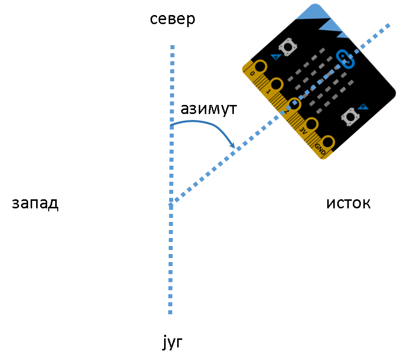

Разни задаци¶
Сваки проблем увек можете решити на више начина. Идеја овог поглавља је да кроз још неколико примера самостално увежбате програмирање микробита. Сваки од задатака обавезно покушајте прво сами да решите, а тек потом упоредите своје решење са нашим предлозима.
Током проналажења решења слободно се ослоните на решене примере из претходних поглавља.
Задатак 1:

Напишите програм који ће укључити диодe на главној дијагонали екрана микробита.

Главна дијагонала представља линију која повезује горњи леви угао екрана са доњим десним. Овај задатак решићемо на два начина.
Прво решење може бити да за сваку диоду користимо функцију која ће да је укључи. Покушајте!
Прво решење:
Можемо да закључимо да је за диоде које се налазе на главној дијагонали број врсте једнак броју колоне. Искористите ову чињеницу и покушајте да саставите решење у коме ћете применити петљу for.
Једно од решења може бити следеће:
Разлика у дужини ова два програма није велика, с обзиром на то да укључујемо само пет диода. Колико би нам програмских линија било потребно за 10000 диода, смештених у 100 врста и 100 колона у првом решењу, а колико у другом?
Споредна дијагонала екрана спаја доњи леви угао са горњим десним. У каквом су односу индекси врсте и колоне диода које се налазе на овој дијагонали? Покушајте да саставите програм који ће укључити диоде које се налазе на споредној дијагонали.
Задатак 2:
Напишите програм који ће са паузaма од пола секунде укључивати једну по једну диоду на екрану по колонама, почев од горње диоде прве колоне.
Једно од решења може бити следеће:
Увиђате ли предност примене циклуса у програму?
Шта би требало да променимо у програму да би се диодице једна по једна укључивале по врстама?
Шта ће се десити ако ред програма sleep(500) померимо за један таб у леву страну?
Задатак 3:
Звезда - Напишите програм који ће диоди која се налази у центру екрана (у трећој врсти и трећој колони) постепено појачавати, а потом смањивати осветљај од 0 до 9.
Једно од решења може бити следеће:
Параметри функције display.set_pixel(x, y, osvetljaj) коју смо користили су: x - редни број колоне и може имати вредности од 0 до 4, y - редни број врсте и такође има вредности од 0 до 4, а осветљај може бити у границама од 0 до 9.
Сваки проблем може се решити на више начина! Покушајте да решите овај проблем без примене for петље!
Једно од решења може бити следеће:
Задатак 4:
Напишите програм који омогућава да светли диода екрана која је најближа северу.
Подсетимо се, функција compass.heading() враћа азимут.
{kind=link}
Једно од решења може бити следеће:
Допуните програм тако да буде прецизнији, да укључује додатне диоде у угловима екрана, које би показивале североисток, југозапад… (додатно поделите интервале азимута за које смо дефинисали стране света).
Задатак 5:
Напишите програм за „Рођенданску песму!”
Ноте за ову песму су:

Једно од решења може бити следеће:
Наравно, могли смо да наведемо и комплетну листу свих нота, али уочавањем делова мелодије који се понављају смо скратили дужину програма.
Задатак 6:
Напишите програм који ће на екрану исписати вредност температуре у Целзијусима када се притисне тастер А, у Фаренхајтима када се притисне тастер B, а у Келвинима када су истовремено притиснута оба тастера.
Формула по којој рачунамо вредност температуре у Фаренхајтима је F = 1.8*C + 32
Формула по којој рачунамо вредност температуре у Келвинима је К = C + 273.15, где је C температура у степенима Целзијуса коју очитава микробит.
Једно од решења може бити следеће:
Задатак 7:
Сигнализација за пружни прелаз - Написати програм који ће омогућити да се наизменично укључују/искључују две светлеће диоде повезане на пинове микробита.
Програм је врло сличан решењу Примера 16 из поглавља Основне функције:
Задатак 8:
Напишите програм који ће омогућити да се притиском на тастер A бежично укључи, а притиском на тастер B бежично искључи диода повезана на други микробит
Саставићемо два програма. Први ћемо учитати у микробит који управља диодом, а други у микробит на који је повезана диода.
Програм за први микробит омогућиће да преко радија проследимо сигнал 0 или 1, зависно од тога који је тастер притиснут:
Други микробит прима ову вредност и омогућава да укључимо/искључимо диоду која је повезана на пин 1:
Задатак 9:
Напишите програм који симулира „трчеће светло”. На пинове 0, 1 и 2 треба повезати светлеће диоде које ће редом, наизменично да се укључују и искључују
Једно од решења може бити следеће:
Замислите да је у питању био неки други контролер и да је требало укључити и искључити петнаест светлећих диода. Колико би програм имао линија? Можемо закључити да би наше прво предложено решење могло да буде и елегантније, иако и сада извршава оно што треба. Да бисмо програм учинили краћим и прегледнијим, можемо пинове којима управљамо сместити у торку, а оно што треба да урадимо са сваким од њих ставићемо у тело циклуса for.
Погледајте и тестирајте и други предлог
Задатак 10:
Напишите програм за симулатор коцкице за „Не љути се човече” који, када се протресе микробит, приказује одређени број тачкица распоређених као на правој коцкици
Прво ћемо дефинисати слике које ће бити приказане уместо бројева, а потом их повезати са насумичном вредношћу коју генерише микробит:
Задатак 11:
Напишите програм за алармни систем. Систем се укључује на тастер A, а искључује на тастер B. Када се микробит помери у односу на x-осу док је систем укључен, аларм се активира и почиње да свира сирена. Сирена треба да свира све док се систем не искључи притиском на тастер B.
Aко за границу помераја која треба да aktivira аларм узмемо вредност 100, програм ћe изгледати овако:
Задатак 12:
Напишите програм који на Plotter-у врши очитавање температуре са микробита који се налази изван просторије. Ако је спољашња температура испод 20 степени, на микробиту који се налази у просторији исписује се „hladno”.
Сличан пример смо већ урадили у претходном поглављу. Једина разлика је што овог пута очитавамо податке са другог микробита. Програм за микробит који се налази изван просторије (он шаље податак о температури):
Програм за микробит који се налази у просторији (он прима податак о температури и исписује поруку):
Задатак 13:
Напишите програм који ће управљати екраном тако да сваке секунде наизменично укључује диоде прве две колоне и последње две колоне.
Једно од решења може бити следеће:
Шта би требало изменити да се уместо по колонама наизменично укључују и искључују диоде по врстама?
Задатак 14:
Напишите програм који помоћу тастера А и B управља серво мотором. Замислите да је на мотор повезана рампа. Притиском тастера А треба да подигнемо рампу, а притиском на тастер B да је спустимо.
Једно од решења може бити следеће (вредности за крајње положаје рампе одредите експериментално, сами):
Задатак 15:
Написати програм који ће омогућити да обртањем потенциометра управљамо брзином трептања срца приказаног на екрану
Брзину трептања срца регулишемо тако што ћемо повећавати и смањивати дужину паузе између два приказа иконе. Потенциометар повежите на пин 0 као што је објашњено у поглављу Додатне компоненте.
Пошто обртањем потенциометра очитавамо на пину на који је повезан вредности од 0 до 1023 (ово можете проверити тако што ћете написати програм који ће исписивати на екрану вредност која је на пину), управо те вредности можемо искористити за дефинисање дужине паузе (додаћемо 50 да нам пауза не би била баш нула када је потенциометар у доњем положају)
Можемо да закључимо да ће пауза бити најкраћа у почетном положају потенциометра, па ће срце тада најбрже да трепери. Шта треба променити да би срце у почетном положају најспорије треперило (размислите о изменама у програму, али и у начину повезивања!)
Задатак 16:
Написати програм који ће омогућити да се обртањем потенциометра укључује једна по једна врста на екрану, почев од доње. Диоде треба да светле интензитетом 5.
Потенциометар повежите на пин 0 као што је објашњено у поглављу Додатне компоненте (можете и на неки други пин, али је важно да и у програму очитавате податке са истог пина).
Већ смо у претходном задатку поменули да на пину на који је повезан потенциометар, зависно од положаја потенциометра, очитавамо вредности од 0 до 1023. Један начин да решимо задатак је да у оквиру интервала (0, 1023) за сваку врсту екрана одредимо гранични ниво, тако да за вредности изнад граничног нивоа укључујемо диоде те врсте екрана. Гранични нивои за врсте треба да буду приближно равномерно распоређени. На пример, за горњи ред 900, за други 700, средњи ред 500, четврти 300 и за доњи ред 100.
Програмско решење може изгледати овако
Уместо одређивања граничних нивоа за врсте, могли смо и да израчунамо број врста екрана које желимо да осветлимо (на пример дељењем очитане вредности погодно одабраним бројем). Након тога, у двострукој петљи укључујемо онолико доњих врста екрана, колико је потребно.
Програмско решење може изгледати овако
Наравно, ово су само нека од могућих решења. Покушајте да решите проблем и на неки други начин.
Како би изгледао програм који треба да укључи само по једну врсту која ће да се (фигуративно) пење и спушта зависно од положаја потенциометра?
Задатак 17:
Написати програм који ће омогућити да се на дисплеју прикаже број додирнутог пина
Једно од решења може бити следеће:
Размислите да ли можемо и мало другачије да напишемо програм…
Једно од програмских решења може бити и применом торки и циклуса:
Да се подсетимо, „додирнути пин” подразумева да смо другом руком преко проводника повезани на GND!
Задатак 18:
Написати програм који ће омогућити управљање мотором или пумпом за воду. Када се притисне тастер А, мотор треба да се укључи, а када се притисне тастер B - да се искључи.
Мотор, односно пумпу повежите као што је описано у поглављу Додатне компоненте. Укључиваћемо га и искључивати уписивањем дигиталне вредности 1, односно 0, на пин који смо му доделили.
Програм је следећи:
Задатак 19:
Написати програм који ће омогућити да се са микробита чују поруке „Добар дан!” када се притисне тастер А и „Довиђења!”, када се притисне тастер B
Да бисмо чули говор са микробита потребно је да урадимо две ствари - да повежемо звучник или слушалице на пин 0 (погледајте поглавље Додатне компоненте) и да укључимо на самом почетку програма библиотеку speech, како бисмо могли да користимо функцију за репродукцију говора.
Решење овог проблема је врло једноставно!
Иако уређај неће јасно и правилно изговорити сваку реч, изговорени текст је у великој мери разумљив и ову могућност ћете врло вероватно желети да користите у пројектима које будете радили.
Задатак 20:
Написати програм који ће детектовати ниво осветљености у просторији применом додатног фото-отпорника повезаног на пин 0. Када је ниво осветљености већи од 400, на екрану треба да буде исписано „dan”, а у супротном „noc” и да се укључи диода повезана на пин 1.
Повезаћемо диоду и фото-отпорник на одговарајуће пинове као што је објашњено у поглављу Додатне компоненте.
Решење овог проблема је врло слично решењима већ урађених примера.